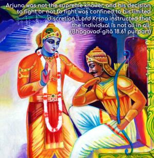
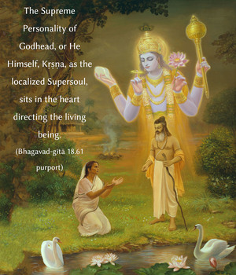
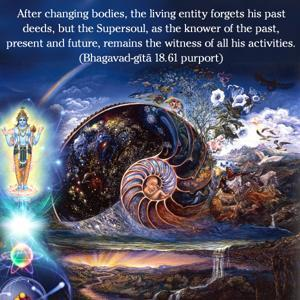
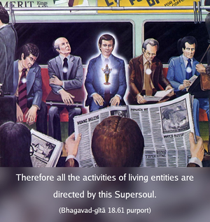
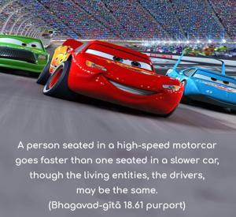
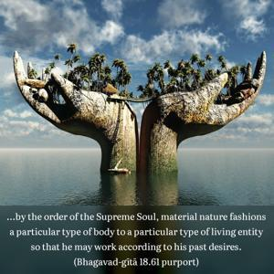

The Supreme Lord is situated in everyone’s heart, O Arjuna, and is directing the wanderings of all living entities, who are seated as on a machine, made of the material energy.






Arjuna was not the supreme knower, and his decision to fight or not to fight was confined to his limited discretion. Lord Kṛṣṇa instructed that the individual is not all in all. The Supreme Personality of Godhead, or He Himself, Kṛṣṇa, as the localized Supersoul, sits in the heart directing the living being. After changing bodies, the living entity forgets his past deeds, but the Supersoul, as the knower of the past, present and future, remains the witness of all his activities. Therefore all the activities of living entities are directed by this Supersoul. The living entity gets what he deserves and is carried by the material body, which is created in the material energy under the direction of the Supersoul. As soon as a living entity is placed in a particular type of body, he has to work under the spell of that bodily situation. A person seated in a high-speed motorcar goes faster than one seated in a slower car, though the living entities, the drivers, may be the same. Similarly, by the order of the Supreme Soul, material nature fashions a particular type of body to a particular type of living entity so that he may work according to his past desires. The living entity is not independent. One should not think himself independent of the Supreme Personality of Godhead. The individual is always under the Lord’s control. Therefore one’s duty is to surrender, and that is the injunction of the next verse.